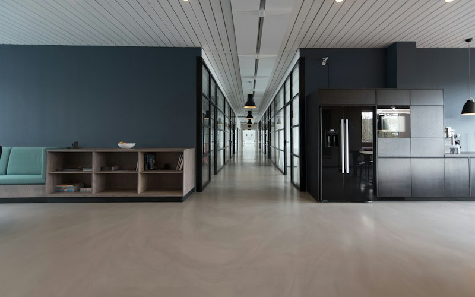

Make good means returning the premises in the condition your lease requires, which can be anything from a clean and a coat of paint to stripping out your entire fit out. The work is usually due by the time the lease ends, so check your lease early, and under a retail lease a cash bond must be returned within 30 days after the lease ends if every obligation is met.

In this article
- What does a make good clause actually require?
- When should you start planning the work?
- Can you pay the landlord instead of doing the work?
- What happens to your bond or bank guarantee?
- How do you hand the premises back properly?
- What if the landlord's claim seems too high?
- How can a lawyer help at the end of a lease?
- Common questions
What does a make good clause actually require?
There is no single make good standard in Victorian law. What you must do is what your lease says, read with any condition report or photographs it refers to, and these clauses differ far more than most tenants expect. A light clause asks only that the premises be left clean and in good repair, with your signs and belongings gone. A heavy one requires you to remove every part of your fit out, repair the damage the removal causes and return the premises to the condition they were in when the lease began, which can mean taking out partitions, ceilings, floor coverings, cabling and plumbing that you may not have installed yourself.
Three questions usually decide what the clause will cost you. The first is the benchmark the premises must be returned to, whether that is their condition at the start of this lease, their condition under an earlier lease or a bare shell the lease describes. The second is what the clause leaves out, and many clauses except fair wear and tear, which matters a great deal for paint and carpet after a long tenancy. The third is who owns what. A fit out you bought from an earlier tenant can still fall within the clause, while items the lease says belong to the landlord may have to stay. Where the lease is silent about something you attached to the building, the general law on fixtures decides, which is rarely a quick answer.
If the Retail Leases Act 2003 (Vic) applies, the landlord must maintain the structure, fixtures and plant in the condition they were in when the lease was entered into, but that duty does not reach anything the tenant is entitled or required to remove at the end of the lease, so your own fit out remains yours to deal with. Our guide to retail leases in Victoria explains when the Act applies.
When should you start planning the work?
Six months before the lease ends is a sensible time to read the clause, find the condition report and photographs from the start, and ask a builder to quote. Most clauses expect the work to be finished by the time the lease ends, which means it is done while you are still paying rent, so a strip out that takes several weeks has to fit inside the term rather than after it.
Staying on to finish the work is not automatic. Many leases say that a tenant who stays on with the landlord's consent becomes a monthly tenant, sometimes at a higher rent, and a tenant who stays without consent can face a claim for the landlord's losses, so agree any extra time in writing before the end date arrives.
Under a retail lease that gives you no option to renew, the landlord must tell you in writing, at least six months and no more than 12 months before the term ends, whether it will offer you a renewal. If that notice does not come, the lease continues on the same terms until a date the landlord must later give you, at least six months after its late notice, although you can instead end the lease by written notice from a day no earlier than the end of the term. Either way, those notices tell you when your make good work actually has to be finished.
Is your lease coming to an end, and are you unsure what its make good clause will really ask of you? Call (03) 9125 8355 or send an enquiry.
Can you pay the landlord instead of doing the work?
Often you can, if the landlord agrees. A landlord who plans to refurbish, or who has a new tenant ready to use your partitions and kitchen, may prefer to leave the fit out where it is and take a payment, or sometimes nothing at all, rather than see it removed and then rebuilt. Raising it early can spare you paying for the same fit out twice, once to build it and once to tear it out.
Whatever you agree, put it in writing and make it complete. The agreement should say what is being left, what payment settles the make good obligation, that the landlord accepts it in full satisfaction of that obligation, and what happens to your bond or bank guarantee and to any personal guarantee. An email saying the landlord is happy for the fit out to stay rarely answers all of those questions, and the gaps tend to surface when a new property manager reads the file.
What happens to your bond or bank guarantee?
Most landlords hold security, either cash or a bank guarantee, and an argument about make good is a common reason it does not come back straight away. Under a retail lease, money paid as a security deposit must be held in an interest bearing account, and if you have performed all your obligations under the lease, the landlord must return it within 30 days after the lease ends.
Outside the Act, the lease decides when security is returned. In either case, a landlord who says the make good work is unfinished will often hold the security until the disagreement is resolved, and many leases allow the landlord to call on a bank guarantee to pay for work the tenant has not done. A director's personal guarantee will usually cover the tenant's obligations under the lease, make good included, so a guarantor has as much reason as the tenant to see the premises handed back properly.
How do you hand the premises back properly?
Ask the landlord or its agent for a joint inspection before the end date, while there is still time to fix anything they raise. Take dated photographs and video of every room, the ceilings, the floors and the services, and keep your builder's invoices and any compliance certificates for electrical or plumbing work. Return every key and access card, take down your signs and leave nothing behind, because many leases allow the landlord to deal with goods left on the premises at the tenant's cost.
Then ask for written confirmation that the landlord accepts the premises and that the make good obligation has been met. A landlord who will not give it is telling you something, and it is far better to learn that while your builder is still on site than from a letter of demand three months later.
What if the landlord's claim seems too high?
Read the claim against the clause, not against the scope of works the landlord's builder has prepared. A landlord can claim for work the lease required and you did not do, and the amount should reflect what that work would reasonably cost, so a claim that would return the premises to a better condition than the clause demands, or repair wear the clause excludes, is open to challenge. Your photographs, the condition report and your own builder's quote are the evidence that answers it.
For a retail lease, a make good disagreement is a retail tenancy dispute, and it must go first to the Victorian Small Business Commission for mediation. VCAT can hear it only once the Commission has certified in writing that mediation has failed or is unlikely to resolve it, unless a party is seeking an injunction. That process covers former tenants and former leases, so it still applies after you have moved out, and a guarantor whom the landlord has called on under the guarantee can refer the dispute as well. In VCAT each party generally bears its own costs, although the tribunal can order costs against a party who conducted the proceeding in a vexatious way that unnecessarily disadvantaged the other side, or who refused to take part in or withdrew from mediation, so it pays to prepare for the mediation as seriously as for a hearing.
Outside the Act, a make good dispute is an ordinary claim under the lease, decided on the contract and the evidence.
How can a lawyer help at the end of a lease?
We read the make good clause with the rest of the lease and tell you in writing what it requires, before you commit to a builder's scope. We can negotiate a payment in place of the work, draft the agreement that records it and the return of your security, and act for you in a dispute before the Small Business Commission or VCAT. You receive a written fee estimate before substantive work begins, and our page on commercial and retail leasing explains how we act for tenants.
Common questions
Do I have to remove a fit out I bought from the previous tenant?
Often you do. Many leases treat a fit out installed by an earlier tenant as the current tenant's to remove, so read the clause and any document you signed when you took it over before assuming it can stay.
Is fair wear and tear excluded from make good?
Many clauses exclude it expressly, and where they do, the ordinary ageing of paint, carpet and fittings is generally not yours to put right. Where the clause does not mention it, the rest of its wording decides, and a clause requiring the premises to be returned to their original condition can reach further than tenants expect.
Can I stay on for a few weeks to finish the work?
Only if the landlord agrees or the lease allows it. Many leases turn a tenant who stays on with consent into a monthly tenant on the same terms, sometimes at a higher rent, so agree the extra time and the rent for it in writing before the lease ends.
Coming to the end of a lease and want to know what make good will really cost before the builder starts? Call (03) 9125 8355 or send an enquiry.
Sources: Retail Leases Act 2003 (Vic).
This guide reflects the law applying in Victoria as at November 2026. It is general information only, not legal advice, and does not take your circumstances into account.